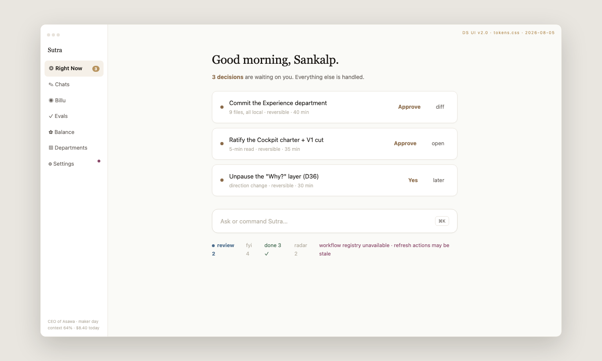
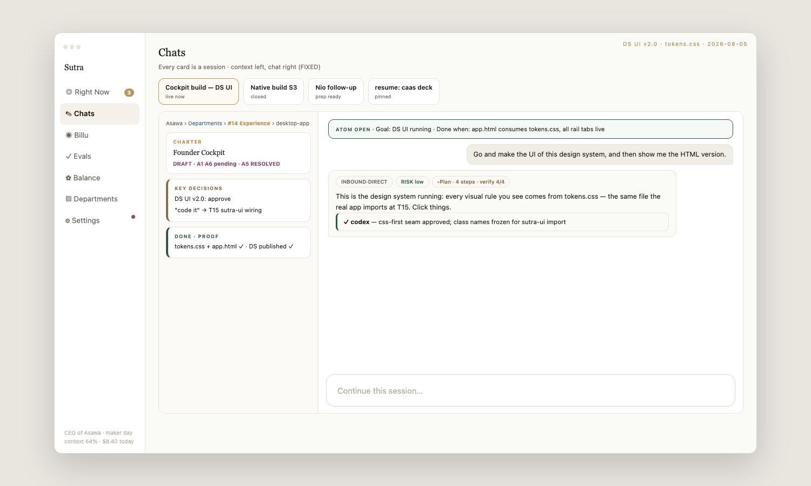

Start with what you see, because it is ordinary: an app on your Mac. On the left, a home screen that says “Good morning. 2 decisions are waiting on you. Everything else is handled.” In the middle, a chat where you type the way you’d text a capable colleague — “reconcile yesterday’s payments” — and the work happens, with a receipt at the end. That’s the whole surface. Everything on this site is about what makes those two sentences true.

The actual home screen. Not a dashboard — a short stack of decisions only you can make, and a promise about everything else.

A session, as it really renders: the goal pinned at the top (“done when…”), your words on the right, the work — with its plan and its passing checks — on the left.
That third scene is the important one. The product gets better in exactly one way: your work, written down with your approval. Not by watching you. Not by guessing. Every playbook it follows is one you saw and said yes to.
| Thing | In plain words |
|---|---|
| A desktop app | One signed Mac download. Runs on the Claude subscription you already have. |
| A read-back before work starts | It tells you how it understood your request — what kind of ask, how big, which part of the company owns it — and you can correct it before anything runs. |
| Costs shown up front | What a job will roughly cost and touch, before it spends anything. |
| Checks that are allowed to fail | Every job carries a declared “done means this” check. When it fails, work stops and you hear about it — failure is never passed downstream as success. |
| Departments with written purposes | Your company’s areas, each with a one-line reason to exist — and an honest “nothing fits” when a request belongs to none of them. |
| A record of everything | Every run, every decision, every approval — plain files on your machine. “Show me what you did and why” is a button, not a negotiation. |
Not settings — limits, built in your favour:
| Question | Page |
|---|---|
| Where is this going, and what proves each step? | Roadmap — the five chapters |
| Where does this fit in the industry, and how does the future look? | Where this fits |
| How does it spread between companies? | Distribution |
| Show me the whole thing in one picture | The company map |
Authored 2026-08-18 for the front door (founder direction: plain, non-technical, customer viewpoint, drawing on the shipped Sutra app). Sources: the Sutra desktop app as built (Right Now decision stack, chat sessions, escalation flow); story-spine research 2026-08-18 (provision list, judgment frame, fencing); the-system-simply.html. Reviewed against 6 codex objections (concrete-first, no builder language above the fold).